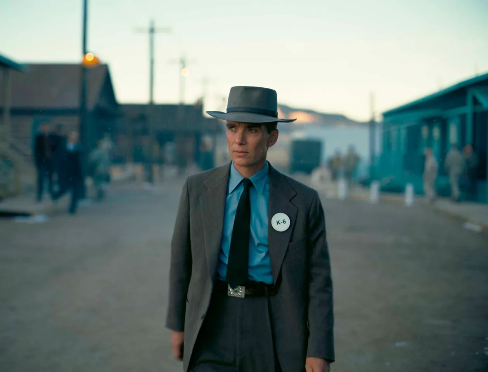

Uważam , że strój dla uczniów powinien być wzrowany filmem Oppenheimer

W skład Stroju wchodzi
Brązowy Kapelusz
Brązowy Krótki krat
Brązowa Długa marynarka
Brązowe Spodnie
Pasek dobry do butów
Brązowe spodnie
Oczywiście strój mógłby być modifikowany przez uczniów.
Na przykład kolor nie musiałby być brązowy , ale żeby podstawowe elementy zostały zachowane.
W ten spsób każdy uczniowie może dobrać do swojego stroju własne modyfikacje ,kamizelke ,buty ,inna koloryska ,przypinki zegarki etc.
Kobiety mogłby wtedy dobrać odpowiednie rzeczy dla siebie.
Strój na WF
Czarna koszulka
Czarne spodnie
Białe Skarpetki